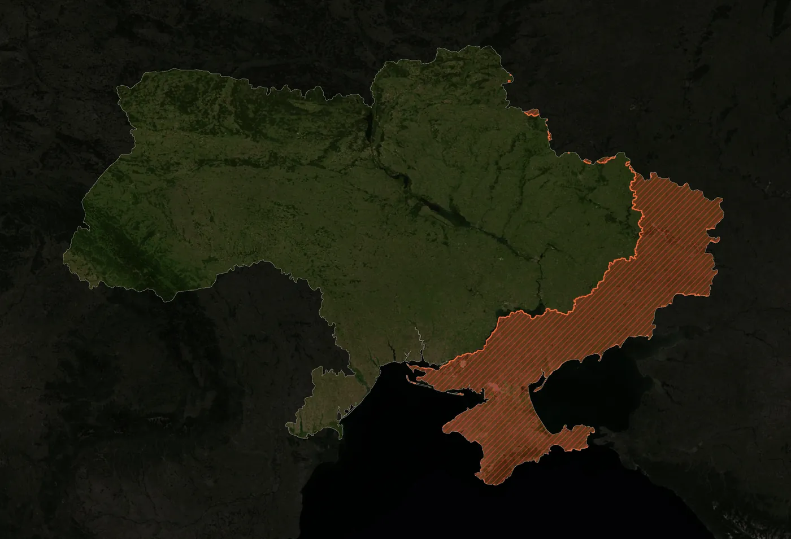

Преса
Press
Матеріали для преси
Press materials
Контакти та прескіт проєкту «Віддзеркалення» — для журналістів, фестивалів і культурних інституцій.
Contacts and the press kit of "Refraction" — for journalists, festivals and cultural institutions.

СоледарSoledar КиївKyiv
Контакт для преси
Press contact
Роксолана Дудка
Roksolana Dudka
Авторка та режисерка проєкту
Creator and director of the project
Прескіт
Press kit
Завантажити прескіт
Download the press kit
Опис проєкту, синопсис, художня концепція, авторська заява, команда, технічні характеристики та контакти — 10 сторінок A4.
Project description, synopsis, artistic vision, creator's statement, team, technical specifications and contacts — 10 A4 pages.